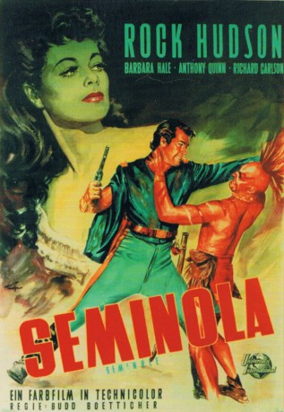

#10479 Seminola
Alternativ: Seminole (Englischer Titel)
 
 IMDB-Wertung: 6.3 / 10
IMDB-Wertung: 6.3 / 10  Metascore: 0
Metascore: 0 
Lt. Lance Caldwell (Rock Hudson) wird nach der Offiziersausbildung zurück in seine Heimat Florida nach Fort King versetzt, um dank seiner Ortskenntnis als Späher zu dienen. Der Kommandant des Forts, Major Harlan Degan (Richard Carslon) verfolgt fest entschlossen den Plan, den ansässigen und eigentlich firiedlichen Indianerstamm der Seminolen auszurotten. Caldwell, der ein freundschaftliches Verhältnis zu den Seminolen pflegt, gerät dabei immer mehr in den Konflikt entweder der Ausrottung der Indianer beizuhelfen oder als Befehlsverweigerer vor dem Kriegsgericht zu landen.Die Situation verschärft sich weiter, als sich herausstellt, dass der Seminolen-Häuptling Osceola (Anthony Quinn) sein alter Freund John Powell ist, welcher zudem in die gleiche Frau (Barbara Hale) wie Caldwell verliebt ist.
Jahr: 1953
Dauer: 86 Minuten
FSK: 12
Land: USA Studio: Universal PicturesTonspuren: DTS - ,
Untertitel: Deutsch,
Auflösung: 1080p (1472x1080) Größe: 6717 MB
Genre: Abenteuer, Western
Regisseur: Budd Boetticher
Drehbuch: Charles K. Peck Jr., Charles K. Peck Jr.
Soundtrack: Henry Mancini, Milton Rosen
Darsteller:
 Rock Hudson als Lt. Lance Caldwell
Rock Hudson als Lt. Lance Caldwell Barbara Hale als Revere
Barbara Hale als Revere Anthony Quinn als Osceola
Anthony Quinn als Osceola- Richard Carlson als Major Harlan Degan
 Hugh O'Brian als Kajeck
Hugh O'Brian als Kajeck Russell Johnson als Lt. Hamilton
Russell Johnson als Lt. Hamilton Lee Marvin als Sgt. Magruder
Lee Marvin als Sgt. Magruder- Ralph Moody als Kulak
 James Best als Corp. Gerad
James Best als Corp. Gerad- Robert Bray als Capt. Sibley (uncredited)
- Duane Grey als Hendricks (uncredited)
 Charles Horvath als Indian (uncredited)
Charles Horvath als Indian (uncredited)- Soledad Jiménez als Mattie Sue Thomas (uncredited)
 Robert Karnes als Corporal (uncredited)
Robert Karnes als Corporal (uncredited)- John Phillips als Maj. Lawrence (uncredited)
 Walter Reed als Farmer (uncredited)
Walter Reed als Farmer (uncredited)- Fay Roope als Zachary Taylor
- John Daheim als Scott
- Frank Chase als Trooper (uncredited)
- Peter Cranwell als Sentry (uncredited)
- Charles Vernon David Cypert als Seminole Indian Warrior (uncredited)
- William Monroe Cypert als Seminole Indian Warrior (uncredited)
- Robert Dane als Trader Taft (uncredited)
- Howard Erskine als Cpl. Smiley (uncredited)
- Jack Finley als Guard (uncredited)
- Don Garrett als Officer (uncredited)
- Don Gibson als Capt.. Streller (uncredited)
- Jody Hutchinson als Guard (uncredited)
- Scott Lee als Trooper (uncredited)
- Alex Sharp als Officer (uncredited)
- Earl Spainard als Trooper (uncredited)
Datei: X:\HD-Western-1900-1959\Seminola (1953, FSK12, 1472x1080).mkv seit 11.01.2019
Festplatte: HD Eastern+Western
 Es gibt insgesamt 98 Filme in der Gruppe 'HD-Western-1900-1959'
Es gibt insgesamt 98 Filme in der Gruppe 'HD-Western-1900-1959'